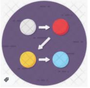

<mat-sidenav-container class="example-container" hasBackdrop="false">
        <mat-sidenav #sidenav mode="over" [(opened)]="opened" hasBackDrop='true' disableClose='false'>
                    <app-tree-view></app-tree-view>
                    <div style="background-color: lightgray; height: 250px;">
                      <div class='hideAll'>
                       <div class="row" style="background-color: white; width: 100%; margin: 0; height: 60px; margin-top: 10px; padding: 3px;">
                          <div class="row">
                            <div class="col-2"><button class="btn"></button></div>
                            <div class="col-2"><button class="btn"></button></div>
                            <div class="col-2"><button class="btn"></button></div>
                            <div class="col-2"><button class="btn"></button></div>
                            <div class="col-2"><button class="btn"></button></div>
                          </div>
                        </div>
                        <!-- <div class="row hideAllButton">
                          <button class=" btn">
                            ^ Hide All
                          </button>
                        </div> -->
                      </div>
                    </div>
                     <!-- <p><button (click)="toggleSideNav()" style="height: 70px; margin-left: 800px;;width: 20px; font-size: 15px;text-align:center;padding: 0px; background-color: gray;">{{opened?'<':'>'}}</button></p> -->
        </mat-sidenav>
        <div class="example-sidenav-content">
          <p><button (click)="toggleSideNav()" class="toggle" *ngIf="!opened" style="position: fixed;height: 70px; width: 20px; font-size: 15px;text-align:center;padding: 0px; background-color: gray; z-index: 9999">{{opened?'<':'>'}}</button>
          <button (click)="toggleSideNav()" class="toggle" *ngIf="opened" style="height: 70px; margin-left: 400px;width: 20px; font-size: 15px;text-align:center;padding: 0px; background-color: gray;">{{opened?'<':'>'}}</button></p>

          <router-outlet></router-outlet>
        </div>
        
</mat-sidenav-container>